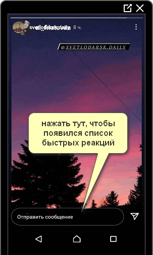
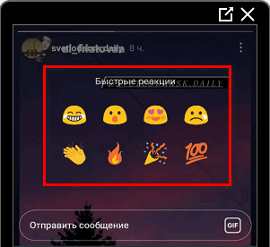
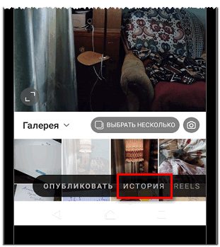
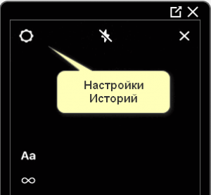
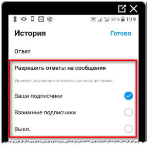
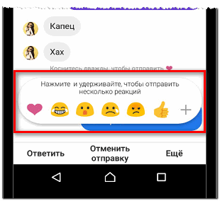
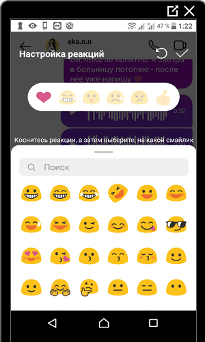
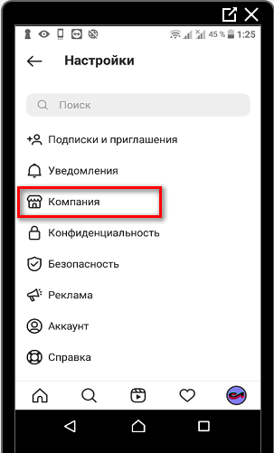
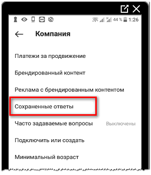

Как настроить быстрые реакции в Историях Инстаграма

Быстрые реакции в Инстаграм* Сторис – это небольшие значки, которые находятся под каждой записью в разделе: «Комментарии». При просмотре чужой Истории, зритель может оставить одобрительный смайл, «огонек» или «Круто на все 100».
Что такое быстрые реакции
Быстрые реакции в Инстаграме* появляются, если зритель зажимает в нижней части экрана при просмотре Истории. Появится пункт: «Комментарии», где можно написать ответ для автора. Последнему смайлик придет в виде сообщения, с отсылкой на саму Историю. Особенности быстрых реакций:
- их можно запретить в своем профиле;
- автор Истории получает уведомление: «На вашу Stories отреагировали» и значок использованного смайла;
- их порядок нельзя изменить, как и заменить сами смайлики;
- отдельно от них добавлены вкладки: «GIF» и «Стикеры»;
- есть в личных сообщениях и там можно редактировать список часто используемых.
Быстрые реакции в Сторис статичны и не меняются со дня их выпуска. Впервые они появились в 2018 году, когда Истории стали популярны среди пользователей более, чем публикации.
Как поставить быструю реакцию на чужую Stories:
- Зайти в Инстаграм* – выбрать страницу друга.
- Нажать по аватарке в Ленте – посмотреть запись.

- Нажать по нижней части экрана: «Быстрые реакции».

- Выбрать значок, который понравился и отправить.
Среди всех доступных реакций есть только одна, которая выражает отрицательную эмоцию – расстройство. Остальные же положительные или нейтральные.
Обозначения быстрых реакций
Быстрых реакций в Инстаграме* немного и они обозначают:
| ? | Очень смешно |
| ? | Удивлен |
| ? | Влюблен или обожаю |
| ? | Расстроен |
| ? | Аплодирую |
| ? | Просто огонь |
| ? | Поздравляю |
| ? | 100 процентов крутости |
В основном, чтобы восхититься публикацией или сделать комплимент автору, используют смайл огня. Нажав по кнопке: «Комментарии», нужно выбрать огонек и отправить владельцу страницы. Как и другие сообщения, отправлять быстрые реакции можно неограниченное количество раз.
Как запретить ответы на свою Историю
Есть три варианта, как ограничить зрителей от постоянных «реакций» на публикации. Отдельный, четвертый, влияет не на всех подписчиков, а на определенного человека. То есть, чтобы избавиться от «реакций» одного фаната, достаточно его заблокировать. Другие способы, как запретить «Быстрые реакции»:
- Зайти в Инстаграм* – нажать по кнопке: «+» в своем профиле.

- Перейти к созданию Истории – нажать по «шестеренке».

- Разрешить ответы от – Никого.
- Сохранить настройки.

Если у пользователя общедоступный профиль и открыты реакции – отвечать и смотреть его публикации может любой посетитель. Но запретив отвечать на Истории, никто не сможет отправить свой комментарий
Инструкция была полезной?
Еще один способ, как ограничить страницу от лишнего внимания – сделать её закрытой:
- Зайти в раздел: «Настройки» - Конфиденциальность.
- Закрытый профиль – подтвердить.
Перейти на этот статус смогут только владельцы личных страниц. Обладатели бизнес или со статусом «Автор» потеряют статистику, охваты.
Реакции в сообщениях Инстаграма*
В социальной сети можно отвечать на сообщения, используя заранее подготовленные реакции или те, которые пользователь выберет. В отличие от Историй, где список заранее подготовлен и не меняется, для сообщений можно подобрать свой перечень. Как выбрать реакции для сообщений:
- Зайти в Инстаграм* – Директ.
- Выбрать любой чат – нажать по сообщению, которое было отправлено собеседником.
- Появится: «Быстрые реакции» - в конце списка: «+».

- Настроить – подтвердить и выбрать свои.

- Нажать сверху по галочке, чтобы сохранить внесенные изменения.
Если пользователь случайно сохранил не те, которые хотел изначально, нужно нажать по кнопке: «Обновить». Она находится в разделе: «Настроить» и необходима, чтобы вернуть стандартные реакции.
Чтобы отреагировать на свое или чужое сообщение:
- Зайти в переписку – нажать по сообщению и задержать палец.
- Выбрать один из смайликов – отправить.
Если не менять стандартный список, то он будет соответствовать тому, который добавлен к Историям.
Сделать автоответ в бизнес-аккаунте
В бизнес-аккаунте Инстаграма* можно настроить авто-ответчик, который и будет реакцией на сообщения от клиентов и покупателей. Он работает по принципу: владелец страницы добавляет короткие уведомление, которые придут в ответ на сообщения клиентов. Но перейти в переписку все же придется.
Чтобы функция заработала, владельцу страницы необходимо подключить бизнес-статус и уже после он сможет применить опцию быстрого ответа.
Как настроить реакции в виде автоматического ответа:
- Зайти в Инстаграм* – выбрать раздел: «Настройки».

- Компания – Сохраненные ответы.

- Создать перечень цитат, которые будут отправлены клиентам.
- Ввести слово или букву, чтобы не вводить сообщение полным.
- Перейти к перепискам и вписать букву/символ.
- Появится значок: «Ввести быстрое сообщение».
Нажав по появившейся опции, пользователь сможет быстро ответить. Кроме текста, в автоответчик можно добавить и смайлики.
Влияют ли реакции на Охват и активность в профиле
В Историях показаны все действия, которые были совершены посетителями страницы. Если они перешли к Сторис, переключились на следующую или вовсе вышли. Реакции в этом случае – это взаимодействие с контентом, которое также будет отображено. Как посмотреть уровень взаимодействий:
- Зайти в Инстаграм* – нажать по недавно размещенной Истории.
- Выбрать: «Статистика», которая размещена снизу.
- Посмотреть охват и взаимодействия.
Если посетитель страницы нажал по публикации и отправил реакцию – это появится не только в личных сообщениях. Но функция просмотра доступна лишь в том случае, если владелец подключил статус «Бизнес» или воспользовался «Автором». На личной странице можно увидеть только зрителей, а статистические данные недоступны.
Почему нет или пропали реакции
Если нет быстрых реакций в Инстаграме*, возможно владелец страницы их отключил. Или нужно обновить приложение, чтобы они появились. Основные причины, почему могут отсутствовать быстрые реакции:
- пользователю никто не отправлял реакций на публикации;
- эта функция отключена в настройках Историй;
- нужно обновить Инстаграм*;
- перезапустить приложение или попробовать на другом аккаунте.
Функция может не работать только в том случае, если владелец страницы её отключил. Во всех остальных – она есть даже актуальна для старых версий. Реакции могут не работать на закрытых аккаунтах, где чтобы поставить лайки или посмотреть публикацию – нужно подписаться.